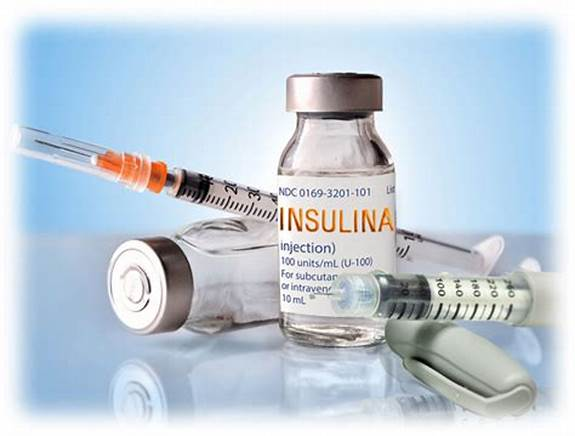

Inyecciones
Inyecciones de Analgésicos y Antiinflamatorios
- Son inyecciones utilizadas para aliviar el dolor y reducir la inflamación. Se emplean para tratar dolores agudos, como los de lesiones o cirugías.
- Diclofenaco: Un antiinflamatorio no esteroideo (AINE) usado para aliviar el dolor y la inflamación en condiciones como artritis o lesiones.
- Ketorolaco: Utilizado para el tratamiento de dolores agudos postoperatorios o de lesiones.
Inyecciones de Vitaminas y Minerales
- Estas inyecciones suministran vitaminas o minerales esenciales para el cuerpo en situaciones donde se necesita un aporte rápido o en casos de deficiencias.
- Vitamina B12 (Cianocobalamina): Utilizada para tratar deficiencias de vitamina B12, lo que puede causar anemia o problemas neurológicos.
- Vitamina D (Colecalciferol): Utilizada en personas con deficiencia de vitamina D, especialmente para fortalecer los huesos y mejorar la función inmunológica.
Inyecciones de Insulina
- Inyecciones utilizadas para tratar la diabetes, regulando los niveles de glucosa en la sangre. La insulina se puede administrar de forma subcutánea para mantener el control de la glucosa.
- Insulina rápida (por ejemplo, insulina Aspart o Lispro): Actúa rápidamente para reducir los niveles de glucosa en sangre después de una comida.
- Insulina basal (por ejemplo, insulina Glargina o Detemir): Proporciona un control más prolongado de la glucosa en sangre.
